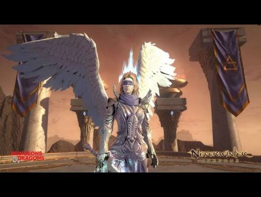

MASTER TRIAL ◆ MECHANICS
ZARIEL'S CHALLENGE
Spread properly. Clear the clusters. Don't make one mistake everybody else's problem.

OVERVIEW
MASTER ZARIEL'S CHALLENGE
Zariel's Challenge is a mechanics-heavy 10-player trial where individual mistakes can quickly affect the entire group.
The mechanics highlighted here are positioning, non-overlapping red circles, cluster placement, cleave avoidance and handling the split demon phases.
SPLIT PHASE
FIRE & ICE DEMONS
- The group encounters separate Fire and Ice demon targets during split phases.
- Focus the assigned target and kill it cleanly before moving to the other side.
- Additional minions appear during later split sections.
- Clear the minions quickly rather than allowing them to build up around the group.
SPREAD MECHANIC
RED CIRCLES
- Multiple players receive large red circles.
- Spread apart immediately.
- Do not overlap your circle with another player's.
- Overlapping red circles can cause enough damage to kill players or wipe the group.
- Keep awareness of where the rest of the party is moving before choosing your position.
ARENA CONTROL
CLUSTERS
- Clusters appear during the encounter and need to be moved or cleared away from the centre.
- Do not leave clusters sitting in the middle of the arena.
- Poor cluster placement can interfere with later mechanics and make movement considerably harder.
- Deal with them promptly before returning to normal positioning.
POSITIONING
CLEAVE
- Watch for the boss's frontal cleave.
- Move behind the boss or otherwise out of the frontal area before the attack lands.
- DPS should avoid remaining directly in front of the boss unnecessarily.
BUFF AREA
YELLOW CIRCLE
- A yellow circle appears during the encounter.
- Players need to stand inside the yellow area to receive its protection or buff.
- Being outside the circle when the mechanic resolves can result in death.
- Make sure you are clearly inside the marked area rather than standing beside its edge.
KNOW YOUR JOB
GROUP RESPONSIBILITIES
TANKS
- Maintain boss positioning so the frontal cleave is kept away from the rest of the group.
- Keep positioning predictable so DPS and healers have space for red-circle mechanics.
HEALERS
- Be ready for heavy damage if players clip overlapping mechanics.
- Maintain awareness during split phases when the party may be spread across different parts of the arena.
DPS
- Spread red circles correctly.
- Keep clusters out of the centre.
- Avoid frontal cleaves.
- Focus assigned demons and minions during split phases.
COMMON WIPES
WHAT USUALLY GOES WRONG
- Overlapping red circles.
- Leaving clusters in the centre of the arena.
- Standing in front of the boss during a cleave.
- Missing the yellow-circle buff.
- Allowing minions to build up during split phases.
- One player mishandling a mechanic and dragging the rest of the group into it.
QUICK REFERENCE
ZARIEL SURVIVAL NOTES
- Red circles → spread and DO NOT overlap.
- Clusters → clear them out of the middle.
- Cleave → get behind the boss.
- Yellow circle → stand inside it.
- Fire / Ice split → focus your assigned side.
- Minions spawn → kill them before they become a problem.